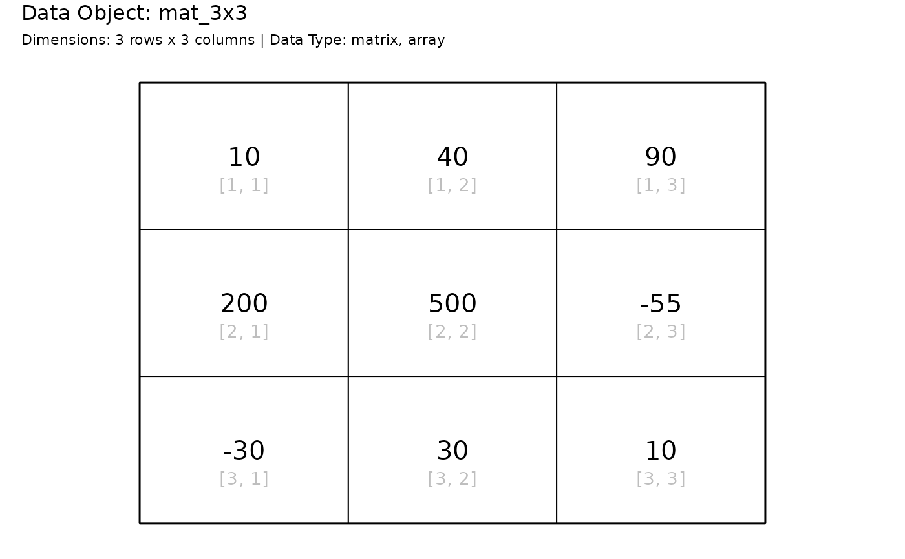
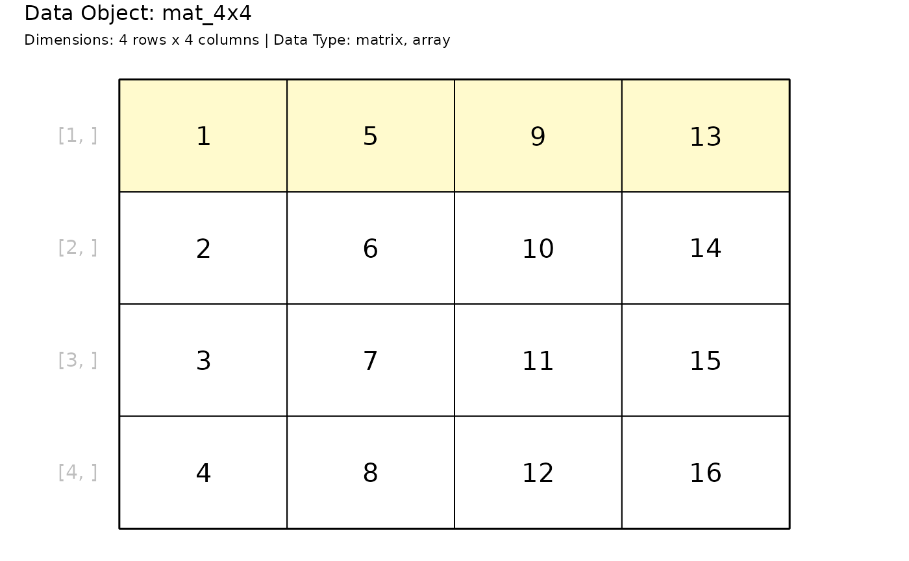
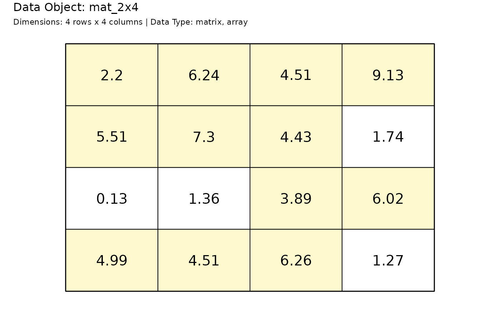
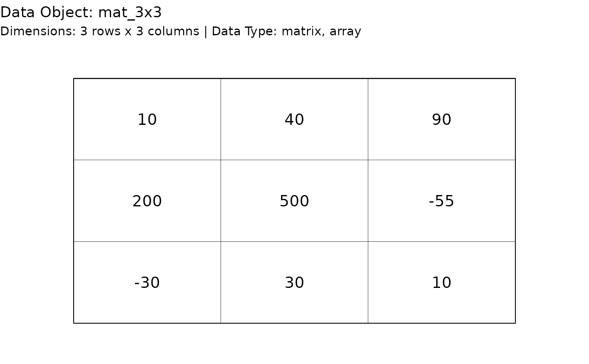
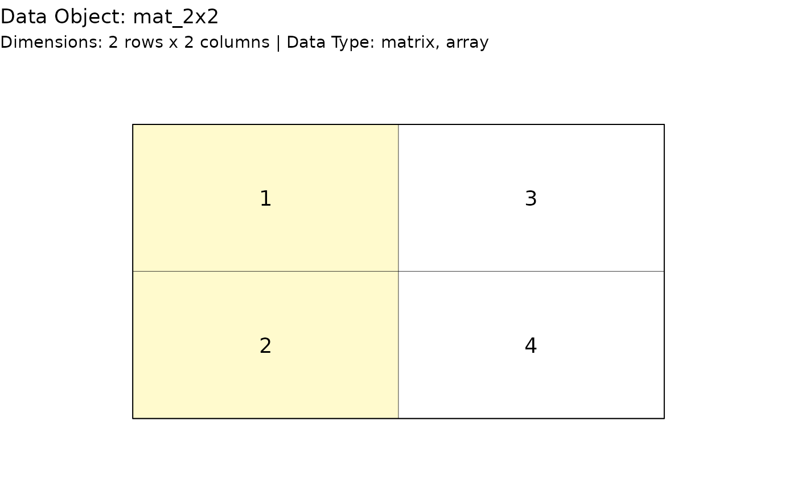
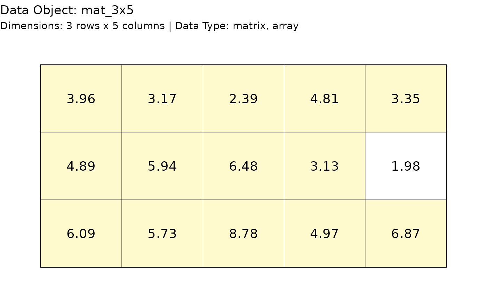
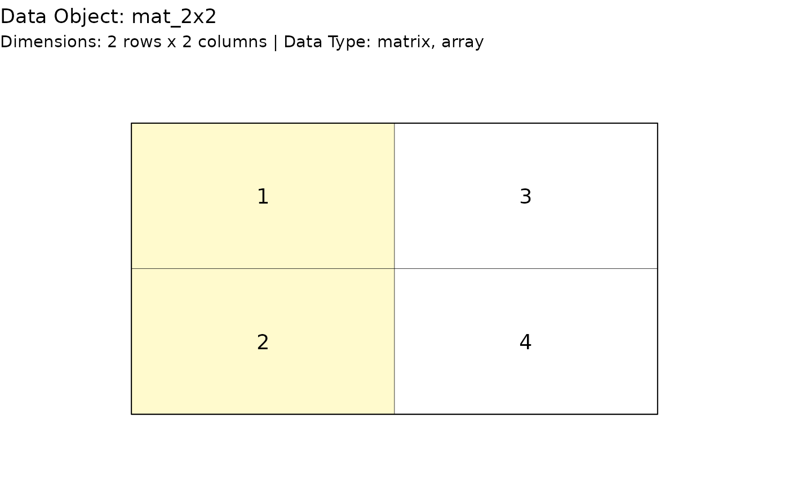
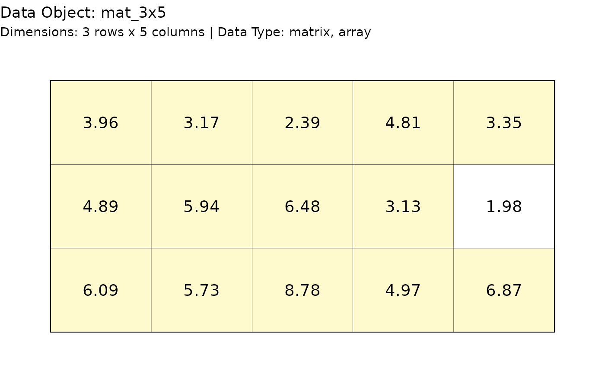

Generate a graph showing the contents of a matrix.
Usage
paint_matrix(
data,
show_indices = "none",
highlight_area = matrix(FALSE, nrow = nrow(data), ncol = ncol(data)),
highlight_color = "lemonchiffon",
graph_title = paste0("Data Object: ", deparse(substitute(data))),
graph_subtitle = paste0("Dimensions: ", paste(n_row, "rows x", n_col, "columns"),
" | ", "Data Type: ", paste(class(data), collapse = ", "))
)
gpaint_matrix(
data,
show_indices = "none",
highlight_area = matrix(FALSE, nrow(data), ncol(data)),
highlight_color = "lemonchiffon",
graph_title = paste0("Data Object: ", deparse(substitute(data))),
graph_subtitle = paste0("Dimensions: ", paste(n_row, "rows x", n_col, "columns"),
" | ", "Data Type: ", paste(class(data), collapse = ", "))
)Arguments
- data
A object that has the class of
matrix.- show_indices
Display indices based on location. Options are:
"none": no indices,"cell": matrix cell indices[i, j],"row": row indices[i, ]to the left of the matrix,"column": column indices[,j]above matrix, and"all": row, column, and inside options. Default:"none".- highlight_area
Matrix of logical values that provide a mask for what cells should be filled. Default: None.
- highlight_color
Color to use to fill the background of a cell.
- graph_title
Title to appear in the upper left hand corner of the graph.
- graph_subtitle
Subtitle to appear immediately under the graph title in the upper left hand side of the graph.
Examples
# Base graphics
# Visualize a 3x3
mat_3x3 = matrix(c(10, 200, -30, 40, 500, 30, 90, -55, 10), ncol = 3)
paint_matrix(mat_3x3)
# Show the cell indices
paint_matrix(mat_3x3, show_indices = "cell")

# Highlight a row
mat_4x4 = matrix(seq_len(16), nrow = 4)
paint_matrix(
mat_4x4, show_indices = "row",
highlight_area = highlight_rows(mat_4x4, rows = 1)
)

# Highlight values above 5
mat_2x4 = matrix(round(rnorm(16, 5, 2), 2), ncol = 4)
paint_matrix(mat_2x4, highlight_area = mat_2x4 > 2)
# ggplot2 graphics ----
# Visualize a 3x3
mat_3x3 = matrix(c(10, 200, -30, 40, 500, 30, 90, -55, 10), ncol = 3)
gpaint_matrix(mat_3x3)


# View the matrix without indices present
gpaint_matrix(mat_3x3, highlight_area = FALSE)
 # Highlight a row
mat_2x2 = matrix(c(1, 2, 3, 4), nrow = 2)
mat_2x2_mask = matrix(c(TRUE, TRUE, FALSE, FALSE), nrow = 2)
gpaint_matrix(mat_2x2, highlight_area = mat_2x2_mask)

# Highlight values above 5
mat_3x5 = matrix(round(rnorm(15, 5, 2), 2), ncol = 5)
gpaint_matrix(mat_3x5, highlight_area = mat_3x5 > 2)

# Highlight a row
mat_2x2 = matrix(c(1, 2, 3, 4), nrow = 2)
mat_2x2_mask = matrix(c(TRUE, TRUE, FALSE, FALSE), nrow = 2)
gpaint_matrix(mat_2x2, highlight_area = mat_2x2_mask)

# Highlight values above 5
mat_3x5 = matrix(round(rnorm(15, 5, 2), 2), ncol = 5)
gpaint_matrix(mat_3x5, highlight_area = mat_3x5 > 2)
